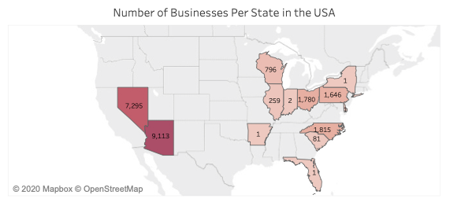
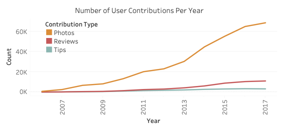
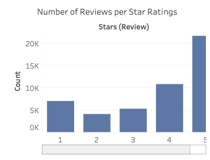
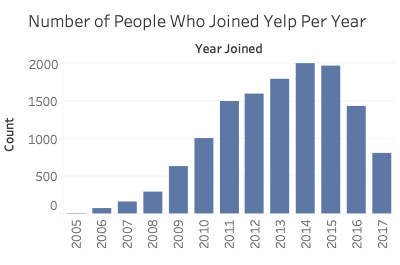
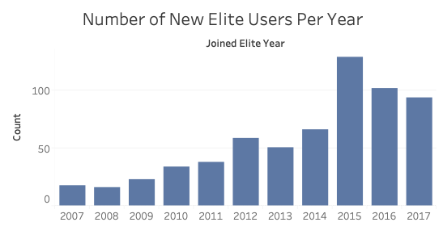
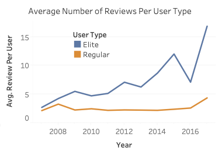

As part of the final project, my teammates and I decided to focus on Yelp Elite Squad. We wanted to learn the elite members' impact on Yelp community and related business. Yelp Elite Squad Analysis was done as the final project of Introduction to SQL and Tableau at Cornell Tech.
My Contributions
Duration: 7 weeks
Programming Language: SQL
My Role: Elite Squad Data Analysis
Background
Yelp’s Elite Squad is Yelp’s way of recognizing people who are active in the Yelp community and role models on the Yelp site. Elite-worthiness is based on a number of things, including well-written reviews, high quality photos and a detailed personal
profile. This is Yelp’s way of increasing user engagement with the platform while ensuring trustworthiness of reviews. A Yelp Elite member gets access to benefits and perks that normal users don’t. Thus, Yelp Elite members are
integral members of the Yelp ecosystem. In this project we analyse the behavior of Yelp Elite members to identify how they are reviewing compared to non-Elite members.
Dataset
The Yelp dataset includes actual data of their businesses, reviews and user data. The dataset consists of a total of 8,021,122 reviews, 209,393 businesses and 200,000 pictures in 10 metropolitan areas. For the scope of the class, we used a reduced version.
Findings

Fig 1: Number of Businesses Per State in the USA
Despite the total number of data samples, there is a huge discrepancy in the number of businesses across different cities in this reduced dataset. For instance, Tempe, AZ has the most number of businesses, compared to some cities, like Scottsdale, AR,
Lingen, DE, and Edinburgh in KHL that still have only one business featured on Yelp.

Fig 2: Number of User Contributions Per Year

Fig 3: Number of Reviews per Star Ratings
The total number of distinct businesses is 28,450 and the total number of distinct users is 13,261.

Fig 4: Number of People Who Joined Yelp per Year

Fig 5: Number of New Elite Users per Year
While there are only 13 users joining in 2005, Yelp gained over 1,000 members each year between 2011 and 2016. Despite its popularity, the average number of reviews for each business was 1.72, which isn’t enough for users to base their decisions solely
on Yelp reviews. On the other hand, more photos than textual reviews are uploaded, which demonstrates that people are more likely to post photos than to write reviews. This implies that aesthetical photos may strongly appeal to
people. Recommending businesses to have their food photo-genic and decorate the interior of the restaurant seem a good way to attract more customers to contribute on their Yelp page.

Fig 6: Average Number of Reviews Per User Type
The Yelp dataset shows evidence that elite users are significantly different than regular users in terms of the number of contributions to Yelp. One prominent example is the average number of reviews that elite users post
per year compared to that of regular users. Also, there is a significant difference in the average number of reviews written by elite users and regular users. Elites contribute more reviews than regular users. The gap also increased
as the time went on, growing to about a four times difference during 2017 (16.84 vs 4.31 average number of reviews/user). This gap in contributions to Yelp is also evident in the number of tips by these user groups. Specifically,
33% of elite users provide tips for business compared to the 19% of regular users who do the same. Combining the two ideas behind these statistics, elite users are more likely to leave both a review and a tip than regular users:
17% of elite users vs 5% of regular users.
Discussion
From the statistics on elite vs regular Yelp members, one can see that Yelp should prioritize getting users to switch to an elite member. Based on the data, one of the factors driving high volume users is their elite status. Elite users significantly
contribute more to the platform than regular users. From this dataset, one can learn that elite users typically do not become elite users immediately after they join Yelp. Looking at the year that users join Yelp and the year they
first become an elite member, one can see that a majority of users become an elite member about one to two years after joining Yelp. When interpreting this data, however, we cannot be sure of the reason why it takes a couple years
before a regular user gets appointed as an elite. One possible reason is that users do not post a significant number of reviews to be noticed by the elite committee until a couple years pass after they initially join Yelp. If Yelp
lowers the standard to first become an elite member, it might have a significant impact on the contribution of users as they are likely to contribute more if they are an elite member.
However, the quality of the reviews written by elite users are only slightly better than those of regular users; elite users have a 3.85 average review score compared to 3.70 of regular users [8]. Potentially, this could be
because of the fact that elite memberships last a year long after you get into the program. Elites might not put in as much effort into their reviews after getting into the program as they are ensured membership until the following
year. A solution for this is for Yelp to check elite members’ reviews more frequently to make sure they keep in line with the elite membership standards. Nonetheless, the similarity in the review quality means that restaurants
should target all users to post about their restaurants instead of focusing solely on elite users.
Conclusion
The Yelp community has been expanding rapidly, beginning around 2014. Businesses on Yelp are not evenly distributed across cities and states. There was a reasonable difference in the average quality of reviews between elite squad members and regular members.
Also, the elite users are more likely to leave a review or tip. Given such information, Yelp can increase its traffic by appointing more elite members and incentivizing the related businesses to offer samples for their check-in
users.